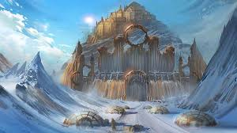

Jotunheim

Hogar de los gigantes:
Jötunheim es el reino de los jotuns (gigantes), que incluyen tanto a los gigantes de la escarcha (hielo) como a los de piedra. Los jotuns son descritos como seres poderosos, a menudo hostiles hacia los dioses, pero también esenciales en el equilibrio cósmico.
Ubicación en los Nueve Mundos:

Jötunheim se encuentra en las regiones exteriores de Yggdrasil, lejos de Asgard (hogar de los dioses Æsir) y Midgard (hogar de los humanos). Está separado de Midgard por un océano vasto e intransitable y de Asgard por barreras naturales y mágicas.
Paisaje y entorno:

Jötunheim es un lugar inhóspito, con paisajes salvajes, montañas heladas, bosques oscuros y terrenos áridos. Es un mundo donde la naturaleza es poderosa, peligrosa y caótica, simbolizando fuerzas primordiales y descontroladas.
Gigantes destacados:
Algunos de los jotuns más conocidos incluyen: Loki: Aunque considerado un jotun, se alía con los dioses Æsir y reside en Asgard. Thrym: Rey de los gigantes de la escarcha, conocido por robar el martillo de Thor en un mito famoso. Skrymir: Un gigante astuto que desafió a Thor y su compañía. Angrboda: La madre de los monstruos Fenrir, Jörmungandr y Hel.
Relación con los dioses:

Los jotuns son rivales constantes de los dioses Æsir y Vanir, representando las fuerzas del caos frente al orden divino. A pesar de su enemistad, los dioses y los jotuns a menudo interactúan, incluso formando relaciones amorosas. Por ejemplo: Thor, aunque un enemigo frecuente de los jotuns, tuvo hijos con mujeres jotun. Skadi, una jotun, se casó con el dios Njörðr. Esta relación refleja una dualidad: los jotuns no solo son antagonistas, sino también agentes necesarios para la evolución y el balance cósmico.
Ragnarök:
En el apocalipsis nórdico, Ragnarök, los jotuns juegan un papel importante como aliados de las fuerzas del caos. Los jotuns, liderados por Loki, lucharán contra los dioses Æsir, lo que resultará en la destrucción de muchos mundos, incluida Asgard.
Simbolismo
Naturaleza indomable: Representa el poder crudo y caótico del mundo natural. Rivalidad y necesidad: A pesar de su oposición a los dioses, los jotuns son parte esencial del balance universal. Ambivalencia: Los jotuns no son simplemente enemigos; también son catalizadores de cambio y progreso en los mitos.